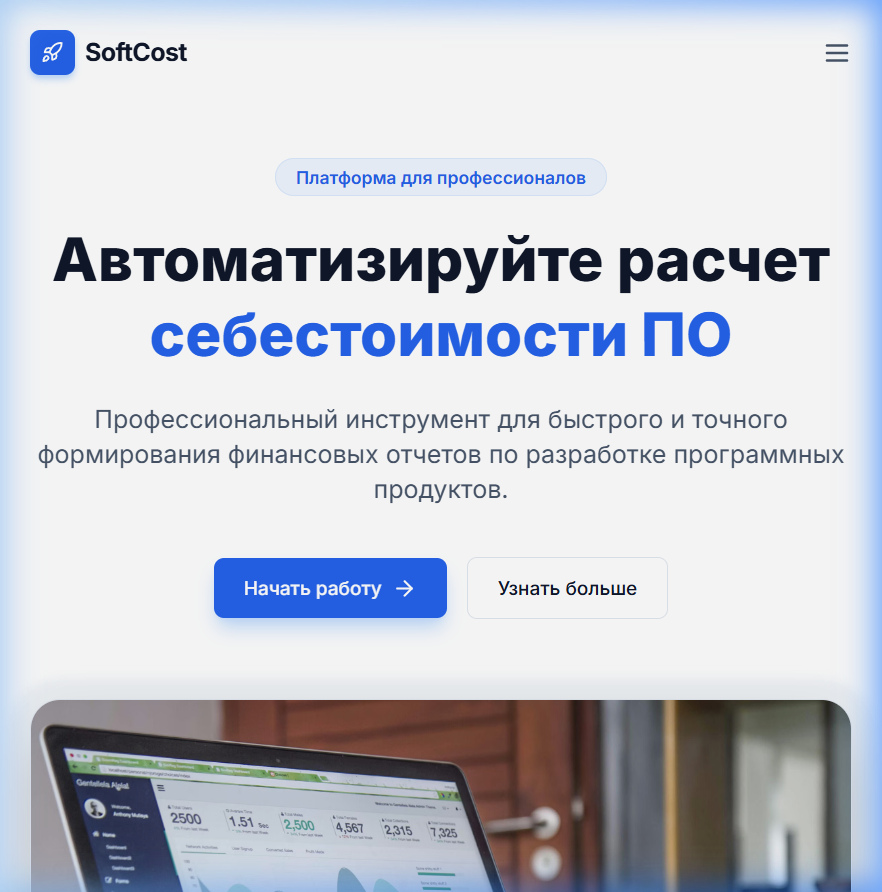
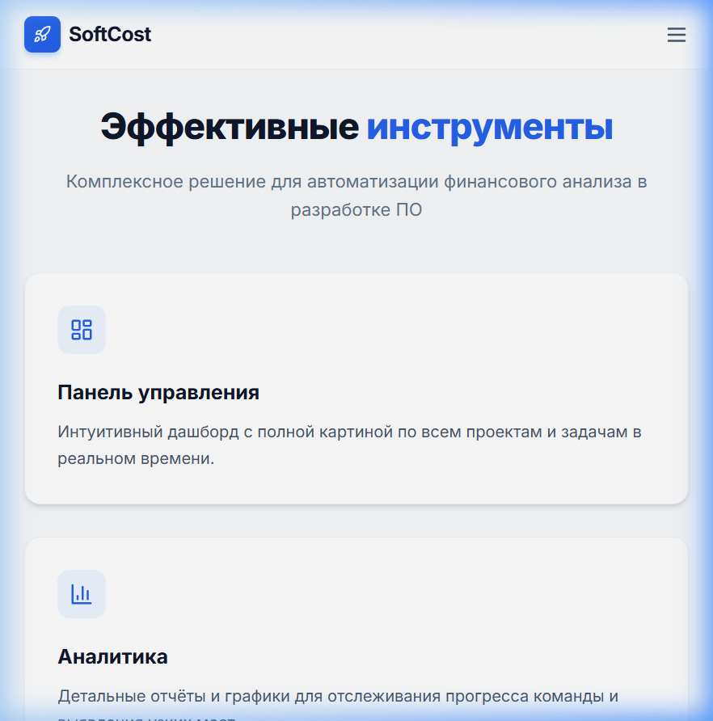
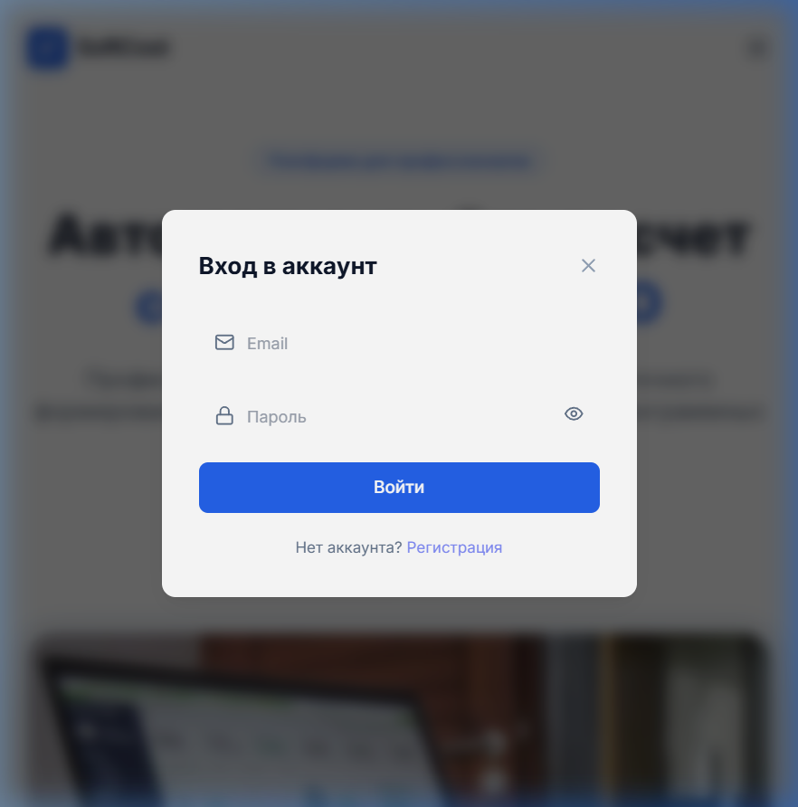
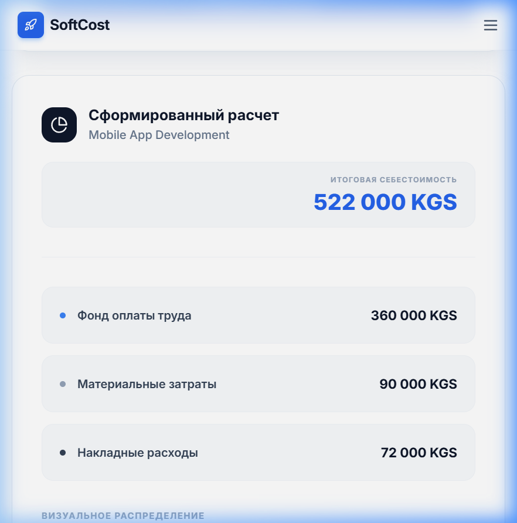

В рамках данной работы была реализована система «SoftCost», основной задачей которой является упрощение и автоматизация процесса оценки себестоимости разработки программного обеспечения. При создании приложения я ориентировался на нужды небольших IT-компаний и фрилансеров, которым требуется быстро и наглядно рассчитать бюджет проекта перед началом работы.
В процессе анализа предметной области было выявлено, что ручной расчет в Excel часто приводит к ошибкам из-за сложности формул и разрозненности данных. Разработанное мною приложение позволяет свести эти риски к минимуму. Основной функционал системы базируется на вводе ключевых параметров, таких как планируемые часы работы, стоимость часа специалиста и дополнительные расходы, после чего программа выдает готовый результат.
Среди основных функций, реализованных в приложении, стоит выделить следующие:
Перед началом кодирования мною был составлен перечень требований, которым должна соответствовать итоговая система. Во-первых, приложение должно иметь минимальный порог вхождения, чтобы пользователь мог начать расчет буквально за несколько секунд. Во-вторых, необходимо было обеспечить точность вычислений до копейки, что потребовало особого внимания к типам данных при программировании.
Основные задачи, которые решались в ходе реализации:
При выборе технологий я остановился на связке React и TypeScript. Выбор React обусловлен его гибкостью и возможностью быстро создавать интерактивные интерфейсы. TypeScript же был необходим для того, чтобы на этапе написания кода исключить возможные ошибки в логике расчетов, так как он обеспечивает строгий контроль за типами переменных.
Для хранения данных и управления доступом была выбрана платформа Supabase. Это позволило мне не тратить время на написание сложного бэкенда с нуля, а сосредоточиться на бизнес-логике приложения. В качестве CSS-фреймворка использовался Tailwind CSS, который позволил быстро сверстать адаптивный и современный дизайн без написания огромного количества лишнего кода.
Логика расчетов вынесена в отдельный программный модуль. Это было сделано для того, чтобы математическая часть не зависела от визуальной составляющей и ее можно было легко протестировать или изменить в будущем. Ниже представлен фрагмент кода, описывающий интерфейс данных и саму функцию расчета.
Данный подход позволяет системе мгновенно реагировать на любые изменения вводимых пользователем цифр, пересчитывая итоговую стоимость в реальном времени.
Интерфейс системы был спроектирован таким образом, чтобы он был понятен интуитивно. Далее я подробно опишу работу каждого экрана приложения с соответствующими иллюстрациями.

Рисунок 2.1 — Главный экран приложения SoftCostНа рисунке 2.1 показан главный экран, который встречает пользователя при входе. Здесь я разместил основные элементы навигации и кнопку быстрого старта. В дизайне преобладают спокойные синие тона, что настраивает на рабочую атмосферу. Использованы эффекты размытия и современные шрифты, чтобы интерфейс выглядел актуально.

Рисунок 2.2 — Описание возможностей платформыВ нижней части главной страницы расположен блок с описанием инструментов (см. рис. 2.2). Каждая карточка рассказывает о конкретном преимуществе системы. При реализации этого блока я использовал библиотеку Lucide для иконок. Верстка выполнена так, что на мобильных устройствах эти карточки выстраиваются в одну колонку, обеспечивая удобство чтения.

Рисунок 2.3 — Форма входа в системуДля защиты данных пользователей мною было реализовано окно авторизации (рисунок 2.3). Оно появляется поверх основного контента. В форме предусмотрена проверка корректности ввода почты и пароля. Связка с бэкендом Supabase позволяет безопасно хранить пароли в зашифрованном виде.

Рисунок 2.4 — Панель с результатами выполненного расчетаНаиболее важным элементом системы является панель результатов (рис. 2.4). После того как пользователь вводит данные в калькулятор, программа формирует такой отчет. Здесь крупно выделена итоговая сумма, а под ней — распределение по статьям расходов. Мною была добавлена цветовая диаграмма внизу, которая помогает визуально оценить, какая часть бюджета уходит на зарплаты, а какая — на материалы.
После завершения разработки я провел ряд тестов для проверки работоспособности системы. Тестировались различные сценарии ввода данных, в том числе граничные значения (например, нулевые или очень большие суммы). Также была проверена работа интерфейса в разных браузерах. Ошибок в логике расчетов выявлено не было, система стабильно работает на всех современных платформах.
В результате проделанной работы мне удалось создать полноценный инструмент для оценки стоимости программных проектов. Использование современных технологий позволило добиться высокой скорости работы и удобства интерфейса.